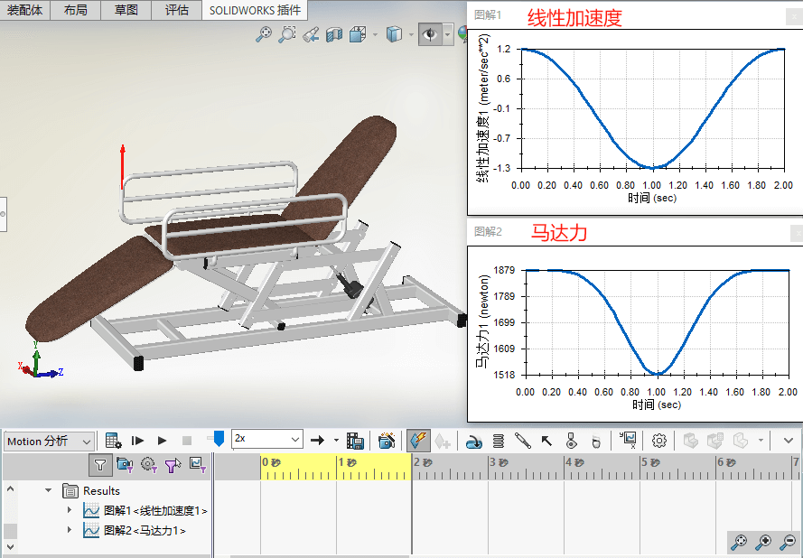
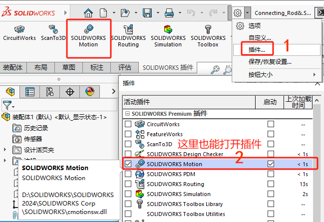
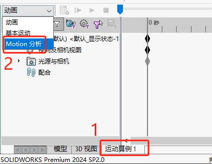
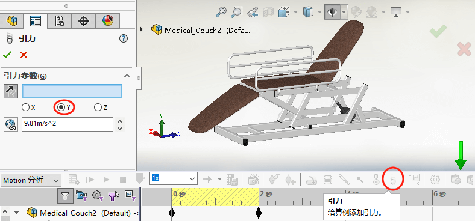
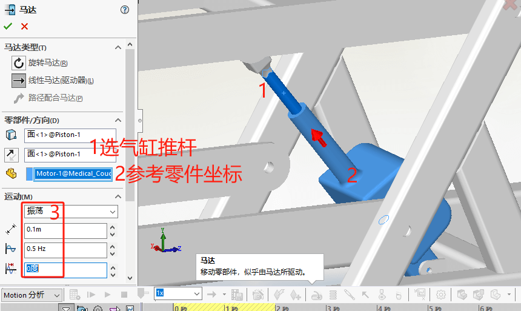
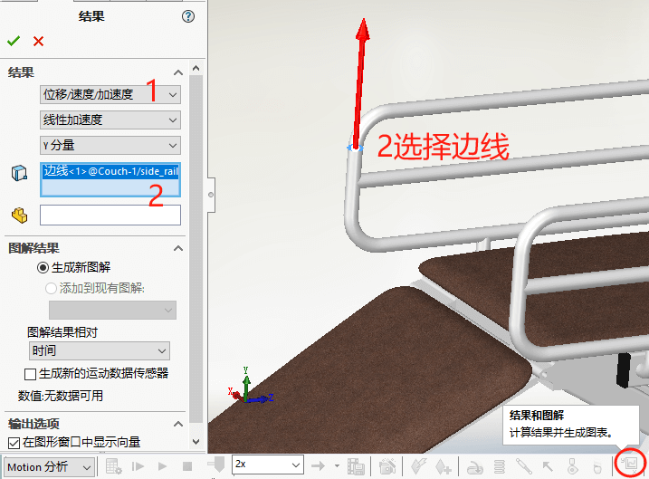
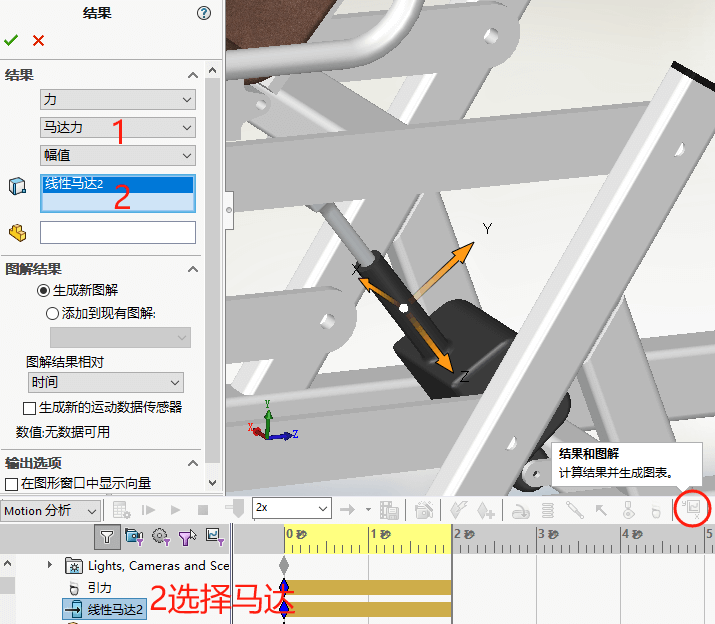
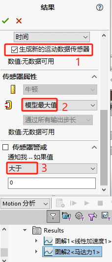

Motion位移和力
在设计时，特别是机构设计时，我们往往需要留意其”运动位置“、”运动受力“等情况，以避免设计计算错误造成的修改成本。
SolidWorks Motion功能即可实现运动算例的结果计算，满足设计检验。你可以应用【电机】、【弹簧】、【阻尼器】、【力】、【接触】、【引力】等物理量，然后在计算算例后绘制结果图表观察。从而很容易看到力的物理量与模型位置联系起来。
Motion实现了设计仿真一体，一切都是参数化的，所以你可以随时返回并轻松地修改它。
例如这个医疗沙发示例。我们可有观察抬升气缸会沙发床的作用力情况。下面我们来演示下操作：
打开插件
在软件底部切换到“运动算例1”模式，并选择运动类型为【motion】。
设置重力
设置马达
设置位移结果
1、现在结果类型是：“位移/速度/加速度”里的“线性加速度，并选择位移方向。
2、选择需要观察位移的对象，可以是点、线、面等对象。这里选择了扶手的边线，检查扶手在移动的变化。
设置受力结果
1、现在结果类型是：“力”里的“马达力“，并选择位移方向。
2、选择需要观察的马达，可以点击运动设计树力的”线性马达“对象，观察马达受力情况。
查看结果曲线
在计算算例模拟后，结果图表会自动更新，就能看到结果设置的图表变化。
设置传感器
SolidWorks Motion还为您提供了能够在整个仿真范围内检查模型中任何组件之间的干扰的选项。和结果值的监控传感值选项。
当对设计进行修改时，它们会自动计入运动研究，让您可以快速查看更改是改善了性能还是使其变得更糟。
